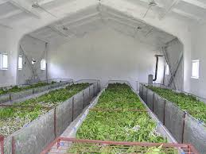

Introduction
Silkworm rearing is the critical stage in sericulture where healthy silkworms are raised under controlled conditions to produce high-quality silk. This process involves feeding them fresh mulberry leaves, maintaining optimal environmental conditions, and preventing diseases to maximize silk yield.
